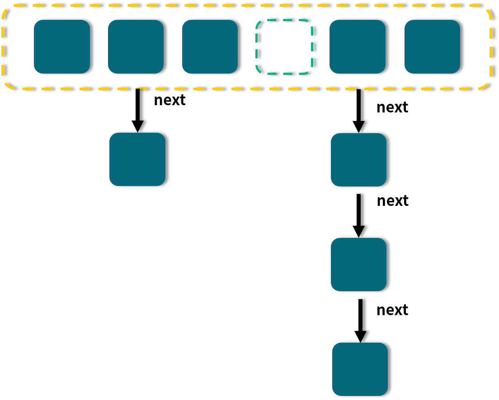
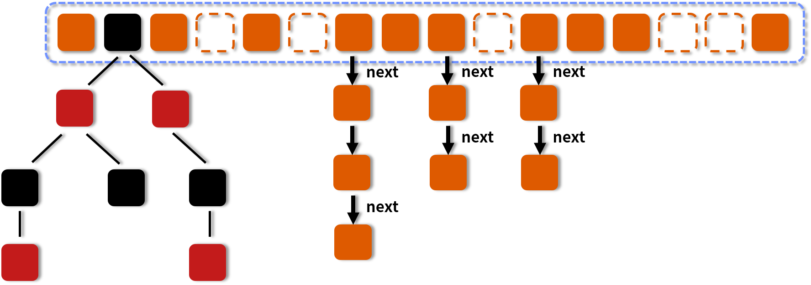
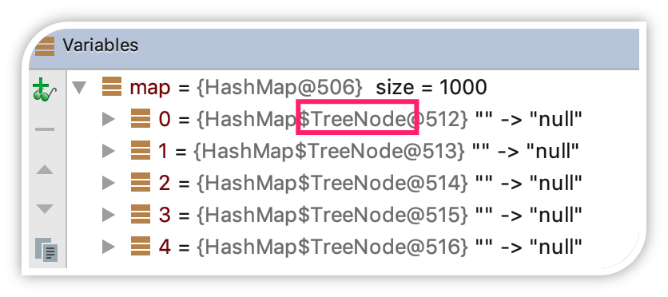

- 00 由点及面，搭建你的 Java 并发知识网.md
- 01 为何说只有 1 种实现线程的方法？.md
- 02 如何正确停止线程？为什么 volatile 标记位的停止方法是错误的？.md
- 03 线程是如何在 6 种状态之间转换的？.md
- 04 waitnotifynotifyAll 方法的使用注意事项？.md
- 05 有哪几种实现生产者消费者模式的方法？.md
- 06 一共有哪 3 类线程安全问题？.md
- 07 哪些场景需要额外注意线程安全问题？.md
- 08 为什么多线程会带来性能问题？.md
- 09 使用线程池比手动创建线程好在哪里？.md
- 10 线程池的各个参数的含义？.md
- 11 线程池有哪 4 种拒绝策略？.md
- 12 有哪 6 种常见的线程池？什么是 Java8 的 ForkJoinPool？.md
- 13 线程池常用的阻塞队列有哪些？.md
- 14 为什么不应该自动创建线程池？.md
- 15 合适的线程数量是多少？CPU 核心数和线程数的关系？.md
- 16 如何根据实际需要，定制自己的线程池？.md
- 17 如何正确关闭线程池？shutdown 和 shutdownNow 的区别？.md
- 18 线程池实现“线程复用”的原理？.md
- 19 你知道哪几种锁？分别有什么特点？.md
- 20 悲观锁和乐观锁的本质是什么？.md
- 21 如何看到 synchronized 背后的“monitor 锁”？.md
- 22 synchronized 和 Lock 孰优孰劣，如何选择？.md
- 23 Lock 有哪几个常用方法？分别有什么用？.md
- 24 讲一讲公平锁和非公平锁，为什么要“非公平”？.md
- 25 读写锁 ReadWriteLock 获取锁有哪些规则？.md
- 26 读锁应该插队吗？什么是读写锁的升降级？.md
- 27 什么是自旋锁？自旋的好处和后果是什么呢？.md
- 28 JVM 对锁进行了哪些优化？.md
- 29 HashMap 为什么是线程不安全的？.md
- 30 ConcurrentHashMap 在 Java7 和 8 有何不同？.md
- 31 为什么 Map 桶中超过 8 个才转为红黑树？.md
- 32 同样是线程安全，ConcurrentHashMap 和 Hashtable 的区别.md
- 33 CopyOnWriteArrayList 有什么特点？.md
- 34 什么是阻塞队列？.md
- 35 阻塞队列包含哪些常用的方法？add、offer、put 等方法的区别？.md
- 36 有哪几种常见的阻塞队列？.md
- 37 阻塞和非阻塞队列的并发安全原理是什么？.md
- 38 如何选择适合自己的阻塞队列？.md
- 39 原子类是如何利用 CAS 保证线程安全的？.md
- 40 AtomicInteger 在高并发下性能不好，如何解决？为什么？.md
- 41 原子类和 volatile 有什么异同？.md
- 42 AtomicInteger 和 synchronized 的异同点？.md
- 43 Java 8 中 Adder 和 Accumulator 有什么区别？.md
- 44 ThreadLocal 适合用在哪些实际生产的场景中？.md
- 45 ThreadLocal 是用来解决共享资源的多线程访问的问题吗？.md
- 46 多个 ThreadLocal 在 Thread 中的 threadlocals 里是怎么存储的？.md
- 47 内存泄漏——为何每次用完 ThreadLocal 都要调用 remove()？.md
- 48 Callable 和 Runnable 的不同？.md
- 49 Future 的主要功能是什么？.md
- 50 使用 Future 有哪些注意点？Future 产生新的线程了吗？.md
- 51 如何利用 CompletableFuture 实现“旅游平台”问题？.md
- 52 信号量能被 FixedThreadPool 替代吗？.md
- 53 CountDownLatch 是如何安排线程执行顺序的？.md
- 54 CyclicBarrier 和 CountdownLatch 有什么异同？.md
- 55 Condition、object.wait() 和 notify() 的关系？.md
- 56 讲一讲什么是 Java 内存模型？.md
- 57 什么是指令重排序？为什么要重排序？.md
- 58 Java 中的原子操作有哪些注意事项？.md
- 59 什么是“内存可见性”问题？.md
- 60 主内存和工作内存的关系？.md
- 61 什么是 happens-before 规则？.md
- 62 volatile 的作用是什么？与 synchronized 有什么异同？.md
- 63 单例模式的双重检查锁模式为什么必须加 volatile？.md
- 64 你知道什么是 CAS 吗？.md
- 65 CAS 和乐观锁的关系，什么时候会用到 CAS？.md
- 66 CAS 有什么缺点？.md
- 67 如何写一个必然死锁的例子？.md
- 68 发生死锁必须满足哪 4 个条件？.md
- 69 如何用命令行和代码定位死锁？.md
- 70 有哪些解决死锁问题的策略？.md
- 71 讲一讲经典的哲学家就餐问题.md
- 72 final 的三种用法是什么？.md
- 73 为什么加了 final 却依然无法拥有“不变性”？.md
- 74 为什么 String 被设计为是不可变的？.md
- 75 为什么需要 AQS？AQS 的作用和重要性是什么？.md
- 76 AQS 的内部原理是什么样的？.md
- 77 AQS 在 CountDownLatch 等类中的应用原理是什么？.md
- 78 一份独家的 Java 并发工具图谱.md
31 为什么 Map 桶中超过 8 个才转为红黑树？
这一课时我们主要讲解为什么 Map 的桶中超过 8 个才转为红黑树？
JDK 1.8 的 HashMap 和 ConcurrentHashMap 都有这样一个特点：最开始的 Map 是空的，因为里面没有任何元素，往里放元素时会计算 hash 值，计算之后，第 1 个 value 会首先占用一个桶（也称为槽点）位置，后续如果经过计算发现需要落到同一个桶中，那么便会使用链表的形式往后延长，俗称“拉链法”，如图所示：

图中，有的桶是空的， 比如第 4 个；有的只有一个元素，比如 1、3、6；有的就是刚才说的拉链法，比如第 2 和第 5 个桶。
当链表长度大于或等于阈值（默认为 8）的时候，如果同时还满足容量大于或等于 MIN_TREEIFY_CAPACITY（默认为 64）的要求，就会把链表转换为红黑树。同样，后续如果由于删除或者其他原因调整了大小，当红黑树的节点小于或等于 6 个以后，又会恢复为链表形态。
让我们回顾一下 HashMap 的结构示意图：

在图中我们可以看到，有一些槽点是空的，有一些是拉链，有一些是红黑树。
更多的时候我们会关注，为何转为红黑树以及红黑树的一些特点，可是，为什么转化的这个阈值要默认设置为 8 呢？要想知道为什么设置为 8，那首先我们就要知道为什么要转换，因为转换是第一步。
每次遍历一个链表，平均查找的时间复杂度是 O(n)，n 是链表的长度。红黑树有和链表不一样的查找性能，由于红黑树有自平衡的特点，可以防止不平衡情况的发生，所以可以始终将查找的时间复杂度控制在 O(log(n))。最初链表还不是很长，所以可能 O(n) 和 O(log(n)) 的区别不大，但是如果链表越来越长，那么这种区别便会有所体现。所以为了提升查找性能，需要把链表转化为红黑树的形式。
那为什么不一开始就用红黑树，反而要经历一个转换的过程呢？其实在 JDK 的源码注释中已经对这个问题作了解释：
Because TreeNodes are about twice the size of regular nodes,
use them only when bins contain enough nodes to warrant use
(see TREEIFY_THRESHOLD). And when they become too small (due
removal or resizing) they are converted back to plain bins.
这段话的意思是：单个 TreeNode 需要占用的空间大约是普通 Node 的两倍，所以只有当包含足够多的 Nodes 时才会转成 TreeNodes，而是否足够多就是由 TREEIFY_THRESHOLD 的值决定的。而当桶中节点数由于移除或者 resize 变少后，又会变回普通的链表的形式，以便节省空间。
通过查看源码可以发现，默认是链表长度达到 8 就转成红黑树，而当长度降到 6 就转换回去，这体现了时间和空间平衡的思想，最开始使用链表的时候，空间占用是比较少的，而且由于链表短，所以查询时间也没有太大的问题。可是当链表越来越长，需要用红黑树的形式来保证查询的效率。对于何时应该从链表转化为红黑树，需要确定一个阈值，这个阈值默认为 8，并且在源码中也对选择 8 这个数字做了说明，原文如下：
In usages with well-distributed user hashCodes, tree bins
are rarely used. Ideally, under random hashCodes, the
frequency of nodes in bins follows a Poisson distribution
(http://en.wikipedia.org/wiki/Poisson_distribution) with a
parameter of about 0.5 on average for the default resizing
threshold of 0.75, although with a large variance because
of resizing granularity. Ignoring variance, the expected
occurrences of list size k are (exp(-0.5) * pow(0.5, k) /
factorial(k)). The first values are:
0: 0.60653066
1: 0.30326533
2: 0.07581633
3: 0.01263606
4: 0.00157952
5: 0.00015795
6: 0.00001316
7: 0.00000094
8: 0.00000006
more: less than 1 in ten million
上面这段话的意思是，如果 hashCode 分布良好，也就是 hash 计算的结果离散好的话，那么红黑树这种形式是很少会被用到的，因为各个值都均匀分布，很少出现链表很长的情况。在理想情况下，链表长度符合泊松分布，各个长度的命中概率依次递减，当长度为 8 的时候，概率仅为 0.00000006。这是一个小于千万分之一的概率，通常我们的 Map 里面是不会存储这么多的数据的，所以通常情况下，并不会发生从链表向红黑树的转换。
但是，HashMap 决定某一个元素落到哪一个桶里，是和这个对象的 hashCode 有关的，JDK 并不能阻止我们用户实现自己的哈希算法，如果我们故意把哈希算法变得不均匀，例如：
@Override
public int hashCode() {
return 1;
}
这里 hashCode 计算出来的值始终为 1，那么就很容易导致 HashMap 里的链表变得很长。让我们来看下面这段代码：
public class HashMapDemo {
public static void main(String[] args) {
HashMap map = new HashMap<HashMapDemo,Integer>(1);
for (int i = 0; i < 1000; i++) {
HashMapDemo hashMapDemo1 = new HashMapDemo();
map.put(hashMapDemo1, null);
}
System.out.println("运行结束");
}
@Override
public int hashCode() {
return 1;
}
}
在这个例子中，我们建了一个 HashMap，并且不停地往里放入值，所放入的 key 的对象，它的 hashCode 是被重写过得，并且始终返回 1。这段代码运行时，如果通过 debug 让程序暂停在 System.out.println(“运行结束”) 这行语句，我们观察 map 内的节点，可以发现已经变成了 TreeNode，而不是通常的 Node，这说明内部已经转为了红黑树。

事实上，链表长度超过 8 就转为红黑树的设计，更多的是为了防止用户自己实现了不好的哈希算法时导致链表过长，从而导致查询效率低，而此时转为红黑树更多的是一种保底策略，用来保证极端情况下查询的效率。
通常如果 hash 算法正常的话，那么链表的长度也不会很长，那么红黑树也不会带来明显的查询时间上的优势，反而会增加空间负担。所以通常情况下，并没有必要转为红黑树，所以就选择了概率非常小，小于千万分之一概率，也就是长度为 8 的概率，把长度 8 作为转化的默认阈值。
所以如果平时开发中发现 HashMap 或是 ConcurrentHashMap 内部出现了红黑树的结构，这个时候往往就说明我们的哈希算法出了问题，需要留意是不是我们实现了效果不好的 hashCode 方法，并对此进行改进，以便减少冲突。
© 2019 - 2023 Liangliang Lee. Powered by gin and hexo-theme-book.